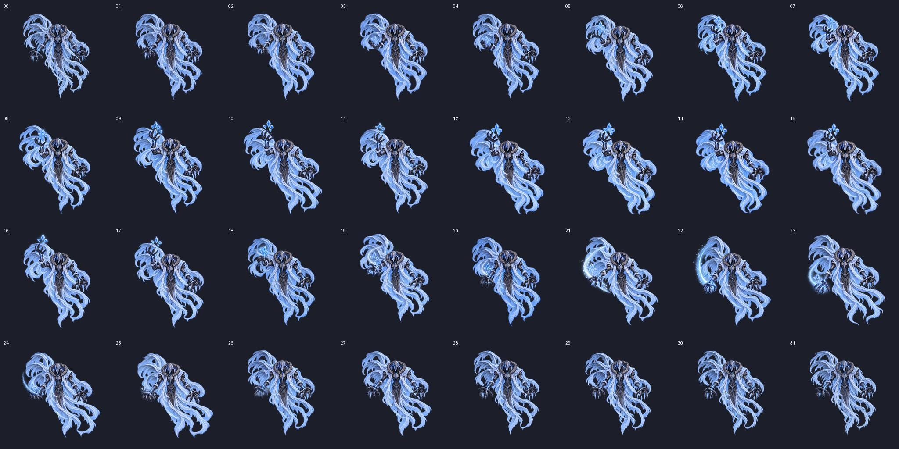

실제 PNG 프레임 수정 · v01 / v02 비교
양쪽 모두 같은 FPS, 같은 프레임 간격으로 재생합니다. v02는 올리기·유지·내리기를 17장에서 23장으로 늘렸습니다. 전체 32장과 Idle 시작·끝은 유지합니다.
00 / 31
v02: 01~10 올리기 → 11~17 최고점 유지 → 18~23 내리기 → 24~30 복귀 → 31 Idle. 12 FPS에서 앞부분 1.42초 → 1.92초, 최고점 유지 0.33초 → 0.58초입니다. 일정 FPS 비교이며 프레임별 대기 시간 조절은 없습니다.
v02 전체 프레임
